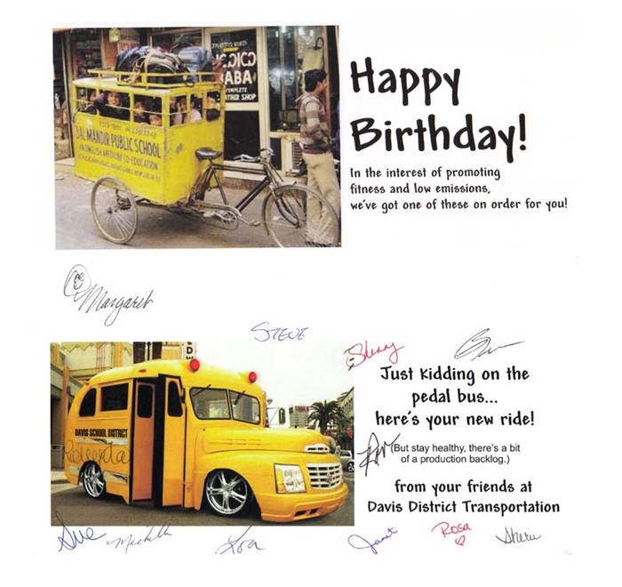

PRINTED
Sunday, February 01, 2009
We slept well last night and Mae woke me at 8AM. We had to get up in order to get to Church in time. Mae had to meet with Bishop Smith at 10:20AM and received a calling to be Sister Friendly – Sharing time Specialist in the Jr. S.S. I went over with her and set up my computer and projector for Priesthood class. I turned on the presentation and found that the projection is off center. I quickly moved all the slides settings to the top and left. I finished just before the Brothers started coming into the room. The presentation went fair but I ran short of time. This afternoon Bob invited us for dinner and it was sure good. After eating Mae helped clean up. Mark and I visited for a while. When I came downstairs Mae was working on the computer sorting pictures. I watched a family movie on Comcast of “Snow White”. It was a cute version of it that I had never seen. Bob sent down two pieces of coconut cream pie. Neither Mae nor I could resist and it was sure good. I also popped some corn and enjoyed that. I entered today’s journal entry and help Mae with some picture transfers. We started to bed early this evening, but then we got an e-mail that reported what activity Oboma has enacted or started during the first few days that he has been in office. It really upset me and I don’t know what we should do about it???????
Monday, February 02, 2009
I woke with a dream of the Erda farm. I have had several of these dreams and they all have the farm in a terrible mess. I don’t know what they mean but they upset me. It was 8AM when we woke. I made an inappropriate comment that I shouldn’t have let slip out, as Mae started right in with house work, and I ask if we were going to eat now or at noon. This started things off wrong. Mae seemed upset with me from that time on. I tried to help with breakfast but that didn’t seem to help. After breakfast I fed my rabbits and then decided to put the lamp in the slide projector and finish capturing our 35mm slides. When I opened the box I found that the lamp was broken. I emailed Adorana, the company that I ordered the lamp through, but as of 5PM this evening they have not responded. Two or three other things upset me today and then I was trying to print of some pictures that I wanted to take to the Doctor but the printer kept jamming. I lost it and jerked the paper out. That upset Mae and she told me to get away form the computer and take a nap or do something else. I just got up and grabbed my coat and went walking. I walked over to Roy and up to the main street before turning around to come home. It was 5PM when I got home and Mae had already gone over to Scotts. I went out and fed the rabbits. Mae called just as I was coming back into the house. That didn’t go to good either. She wanted me to go over to Scott’s to eat dinner but I didn’t feel that I should. Mae didn’t get home until after 9PM. I had fallen asleep but was awaken by a phone call from Sandi. They are undecided as to whether or not to go on the snowmobile trip to Soda Springs. Sandi has to work on Wednesday and Nike has to take a test for employment with the postal services on Thursday. They will let us know tomorrow what they decide to do. Time went fast after Mae got home and it was late when we got to bed.
Tuesday, February 03, 2009
I woke at 3AM and couldn’t go back to sleep so I got up. I lay in the recliner but still didn’t go to sleep. I finally decided to get up and work on my personal history. I started to digitize my first five year diary. Mae got up at 7:15AM and wanted me to go back to bed. I stayed up a little longer but then went back to bed after 8AM. It was almost noon when I woke back up. Bob, Mae and I went over to Sam’s Club to purchase some items. While we were over in Riverdale we also went to The Good Earth Health store. It sure cost to eat healthy. This after noon went fast but I did get a lamp for the slide projector reordered. The bus department sent me a cute Birthday card. Maybe I can digitize it and add it to this journal. I also fed the rabbits this afternoon. Just as we were getting ready to go to the Family History Center, Bob called downstairs for me to get the shop vacuum as he had forgot to put the washer drain hose back into the drain pipe after he had poured a pipe cleaner down the drain. Mark had put a batch of clothes in to wash and when it went into the spin cycle water came rolling out into the kitchen and the dinning room floor. We worked fast but water did go down into our apartment also. We did get it fairly well cleaned up in tome for Mae and I to go to the center. Things went well but slow, so I worked on my Grandparents Family records. After finishing at the center we came home and then went back to Scott’s so I could give Scott a Priesthood Blessing. Scott has a test to take tomorrow that he has been under a lot of pressure for two weeks of study and they must pass the test in order to keep their job. it was late when we got to bed tonight.
Wednesday, February 04, 2009
We slept in until after 8AM. Mae got us some breakfast and then I got on the internet to check on the projector lamp. After several attempts I got the lamp on order. I was frustrated at the computer and the procedures it take to order on line. Shortly after that Mark called and said that he had an engine to buy for the tiller. I went up and spent close to an hour trying to pay for it. Finally we went down stairs and tried on our computer. I again became frustrated and finally turned it over to Mae. Mae worked on it for over two hours before she was able to purchase the motor. I got the snowmobiles ready and packed the truck for us to go. Sandi didn’t get there until almost five. It gave me time to care for the rabbits before we left. It was 8:15PM when we got to the lodge. We enjoyed just visiting with Sandi this evening before going to bed.

I received this card from the School Bus shop today. I really enjoyed it so wanted to insert it into my journal.
Thursday, February 05, 2009
We slept in until late getting up for breakfast at 9AM. Sheri had breakfast ready for us when we got downstairs. It was very good and her presentation made it very appetizing. The three of us went out snowmobiling and had a wonderful morning. We came back for lunch about 1PM. Again Sheri had lunch ready when we got back. Nick got there about 3 or 3:30 PM and we soon went back out riding on the snowmobiles. We took a new canon to ride and at one area Nick ask me how someone could have gone up that steep of a hill. We were looking at previous tracks. I took one of the smaller machines and told him I would show him how. I had planned on just going up a little ways and coming back down but I lost speed before turning around and when I turned I rolled the machine. The snowmobile came to a rest upside down on top of me. I managed to hit the kill switch but I was stuck under the machine. Of course Mae, Sandi and Nick were very upset. Sandi got to me first and I assured them that I was ok but just pinned down. Sandi and Mae tried to lift the machine off me but they couldn’t. Nick had trouble getting up the hill but when he got there they were able to roll the machine off and as it rolled it landed on upright and pulled Nick on down the hill. Nick was able to guide the slay between the other two machines so all was well. It was almost 7Pm when we got back in from snowmobiling this evening. Again we had a wonderful time. Sheri had a wonderful dinner prepared for us. We had planned on going into the hot tub this evening but the last group that had been there had shut the unit down and it froze up. Sid thought that he could just let it warm up for a day and it would be ready for tomorrow evening. After dinner we watched a DVD that we all enjoyed. We were late going to bed.
Friday, February 06, 2009
Again we slept in getting up just in time for breakfast at 9AM. It is really nice getting up to a very nice hot breakfast. It snowed last night and was still snowing this morning. We still got ready and went out with the snowmobiles. The snow was not hard enough to hinder the fun, in fact it was even more beautiful and I enjoyed breaking new trails. We were back to the lodge for lunch at 2PM. Sandi’s neck was starting to bother her so we didn’t go out again on the snowmobiles. The hot tub still isn’t working so we watched a movie and played games. Mae and I taught Sandi and Nick how to play Canasta so we finished the evening with a game of Canasta. Mae and Sandi kick Nick and I.
Saturday, February 07, 2009
After breakfast we got packed up to check out. We have really enjoyed the hospitality of Sid, Sheri and Pat (Sid’s Mother). The whole time has been just wonderful and so relaxing. We hope to come back for another week in June. On the way home Mae and I decided that we should stop in Pocatello and visit Rich and Lois. It was only a little ways out of our way so we did. We got there just as they were eating lunch so we ate a little with them. We stayed for a couple of hours and it was good to see them. Lois is feeling much better that she did when they came for Mat’s funeral last week. She has also been to the Dr. and he told her that he didn’t advise her to have a back operation. She said that just the relief from worrying about that has made her feel much better. When we left I drove but by the time we reached the Malad pass I was too tired to continue so Mae drove on to Brigham City. We stopped there and filled up with gas and natural gas. I drove on home from there. We unpacked and took care of the rabbits and then went to bed and watched a movie before going to sleep.
Sunday, February 08, 2009
We got up before 6AM so that we could go out to Tooele and attend Sandi and Nick’s Ward for Sacrament meeting. The Young Woman’s Presidency was asked to speak today and Sandi is the 1st counselor. We wanted to support her in this assignment. She did very well and did the others. We came on home after the meeting. I took a nap but Mae started dinner for Scott and his family at 5PM. We attended our ward’s Sacrament meeting. Bob invited us up for lunch. We just had time to prepare dinner before Scott and his family came for dinner. We sure enjoyed having them spend the evening with us. Scott show me some things about my Photo program on the computer that will help me. After they left I got on the computer and caught my journal up to date. Mae has been on the telephone with some of the children. It is now 10PM so I had better get to bed.
Monday, February 09, 2009
We were awaken at 6:15AM by the phone ringing. My first thoughts were that it was a late call for a bus run but instead it was Roger Sylvia from the Philippines. Heidie just wanted to call and visit with Sister Browning. We were only on a few minutes when the call was cut off, probably because of time. We tried to go back to sleep but then we expected David to bring Connor for Mae to tend today. Usually David comes about 8:30 but he had a conference call and then he had lots of snow that fell last night. They didn’t get here until 10:30Am. I had just finished with the rabbits as they came. I went over to the District bus shop to visit with Roberta about the field trip that I took last week, because of not having the mileage, the computer will not except the entry. Roberta estimated 15 miles each direction and said to just feed it in. I made those entries there on the shops computer. I then went to the Home Depot and got some prices on materials. After that I went to Standard Optical in Roy and got the nose pieces repaired on my glasses. Mae fixed some lunch when I got home and after eating I set up the projector and finished digitizing the remainder of our 35mm slides. It was after 6pm when I finished. I fed my rabbits while Mae fixed us some dinner. I cleaned up the slides, the projector and put my mess away. I don’t know what we will do with the old slides now. Mae spent most of the day with Conner. Jeff called us this evening. He asked me if I could go over to the house and patch the rain gutter over the front steps. Mae visited with him for ½ hr or so. It was good to hear from him. He told us that the house is selling in the next few days. I had better get the rest of the furniture out of Jeff’s house this Saturday.
Tuesday, February 10, 2009
I woke at 1:30AM and so as not to disturb Mae is went back to sleep in the recliner. I woke again at 3AM and so went back to bed. At 5:30AM I got a call from the bus dispatch needing a driver to leave the compound by 6:30AM. I really had to hurry to do that. With Mae’s help I got away from the house by 5:50AM. The run went well as I had a good assistant that know the route. It was 9:30AM when I got back home. Gail had just brought the children for Mae to tend as she is substitute teaching today. I took care of the rabbits and then came in and ate some breakfast. I took a little nap but the phone rang and woke me. it was one of those recorded messages. I got some tools and went over to Jeff’s and looked at the water problem in the front entrances. I didn’t have what I needed to repair it now. I will have to do that another day. I went over to Nancy and Fran’s for another updated scan but Fran was out to lunch so I had to leave in order to make the afternoon run. This afternoon run also went well and I got home about 5PM. Gail and the children were just leaving when I got home. Mae and I ate and then went to the Family History Center. I think we learned some this evening. I filled out my journal entry, took a bath and went to bed. Mae is working on the 35mm slides getting them separated into files.
Wednesday, February 11, 2009
I got up at 5AM for a bus run. It was a Special Ed run out of the Farmington compound. It went well but the bus was under ½ full of fuel. I had enough fuel for this morning’s run but would be short for this afternoon. I called the dispatch office and found where I could get fuel in the Farmington area. I fueled the bus after taking my assistant back to the compound. It was almost 11AM when I got home. Mae had fed the rabbits for me before I got home. Mae fixed me something to eat and then I took a short nap before Scott came over for lunch. It was good to have him here for a few minutes. We miss not having Jeff here also. This afternoon run went well. When I got home, Mae soon had dinner ready for me when. This evening Bob and I went Home Teaching. We had nice visits with each of our families and found then all well. When I got home I filled out my journal. Mae read me an e-mail from Garrett. He is an awesome young man and really enjoying his mission experience. I have an early field trip in the morning so I had better bet to bed.
Thursday, February 12, 2009
I woke at 4:30AM and got ready to go to work. I drove a Field trip in which I picked up students at three High Schools and took them to Weber University. I then came home and went back in the afternoon to return them. My route sheet indicated that I was to pick them up at 2PM at the University. Time went fast in between the two runs, although I didn’t get much accomplished. At 2PM no one came to the bus so I called the one advisor. He said that they wouldn’t be finished until after 4PM. I just had to wait. I let the last students off at 5:15PM. I got home at 5:45PM. Mae had dinner ready when I got there. She had also fed the rabbits before I got home. After eating we went over to Gail’s Mother’s where we joined with the family to celebrate Rachael’s 1st Birthday. We didn’t stay very late so was home about 8PM. I entered this entry and then took a shower before going to bed. I got a call at 10PM this evening, as we were going to go to bed and watch a movie, asking me to take a bus run out of Farmington. We shut the show off and went to sleep.
Friday, February 13, 2009
I took the run this morning. I had some trouble getting to the first pickup point, but then I had the first student direct me from there. When I got home Mae was gone to help to Kylan’s school to help with a Valentine party. I got my self some to eat and then was going to work on the computer for a while, but Roberta called me and asked if I would change afternoon routs. I did and had to hurry and leave. That run was out of Freeport Center and because it was a special Ed. I had an assistant to guide me. after the run I had to fill the bus with fuel. I then went to Roy where I bought Mae a corsage for the dance this evening. Mae was out Visiting Teaching when I got home. We had to hurry when she got home as we had an appointment to meet Rick and Georgia for dinner at Golden Corral. After eating we went to their home and played a game for about an hour. We then went to their Tri-Stake Valentine Dance. We really had a wonderful time dancing. We also met Percila and Dave Nelson’s and Kent and Darla Rampton’s there. I enjoy dancing with Mae so much. Kent Rampton commented that we should teach dancing, but that isn’t that easy to do. We danced almost all the dances right up to the last number. It was almost mid-night when we got home. We were disappointed in the corsage because it was made with a wrist band and didn’t come with a pin. It was to heavy for Mae to keep on her wrist so she had to put it back in the box and save for later.
Saturday, February 14, 2009
I didn’t sleep very well and spent most of the night in the recliner. We didn’t get going until after 9AM. We were going to go up to watch Tyler’s ball game but we couldn’t get a hold of them and didn’t know where the game was being held. It is also snowing quite hard so we were a little concerned about the canon. We went over to Scott and Mishelle’s and tended the children so Scott and Mishelle could go out to eat and be together for a little while. I visited with Kip and enjoyed that. I did laid down on the couch and took about an hour nap. Kylan and I went over to Green’s Farm and Feed, where I bought some rabbit wire and some more water bottles. We then went to Home Depot and bought the material to build another set of rabbit hutches. Kylan wants to come over Monday and help me build them. He seemed to enjoy being with me and just visiting. Scott and Mishelle had returned when I got back. We came home and I went out and took care of the rabbits while Mae got us some fruit and toast to eat before going to bed. I changed a light bulb in the front room and entered my journal. We then took showers and went to bed.
Sunday, February 15, 2009
With our meetings starting at 11AM we took our time getting going this morning. I cooked egg omelets for breakfast. After breakfast I took care of the rabbits and then got ready for church. We were able to watch the Tabernacle Choir this morning. Shortly after meetings started the power went off. We were still able to hole all the meetings. Just before Sacrament meeting ended the power came back on. After getting home we started getting dinner ready. We had just started to cook when the power went back off. I got the barbeque grill out and cooked potatoes, squash and sweet potatoes on that. Bob helped me get the generator out and we used the electric grill to cook chicken. We decided to cook rolls but Mae had put then on a cookie sheet and that wouldn’t fit in the barbeque grill so we had to transfer them to a smaller pan and that caused them to fall. They came out fair. Just after putting them on the grill the power came back on. David, Shauna and the children came for dinner. We played games after and enjoyed having them. I loaned David my cowboy belt and hat for a party they are going to. He was quite excited about that. After they left for home I went out and fed the rabbits again. I filled out my journal before we went to bed.
Monday, February 16, 2009
We didn’t get up until almost 8AM and before we were dressed Scott brought Kylan by. Kylan wanted to help me build the new rabbit hutches. We worked on them most of the day and when Scott came by to get Kylan, Kylan was disappointed that we hadn’t finished and transferred the rabbits to the new pen. Mark also helped me all day. Mae prepared lunch for the three of us. Things went well but we finally quite about 6PM for the day. I was tired. I took care of the rabbits and then Mae had dinner ready. After eating I filled out my journal for today and took a bath. We watched the movie “Roman Holiday” before going to sleep.
Tuesday, February 17, 2009
I slept in until almost 7AM but Mae got up at 5:30AM. I got dressed to work in the garage on the rabbit hutches but then remembered that I had a Sub-Round Table meeting to be to at 9:30AM. I changed clothes, fed the rabbits, ate breakfast and left for the meeting. I was after 11AM when I got home and Mae soon had lunch ready. After lunch I went to work on the rabbit hutch. I also took time to remove the snow from the driveway. It has really snowed today. Mae went over to Sister Larsen’s and helped her with some house work and also some Family History. She was there a couple of hours. When I got the hutch finished Bob and Mae helped me move it out to the back yard and put some of the rabbits in it. Bob cleaned up my mess in the garage and got his car back inside. Mae and I were late getting to the Family History Center this evening. We had a scout troop come in to work on a Family History Merit Badge. I tried to help to boys and really realized how much I do not know. I worked on the computer when we got home, getting some records on the rabbits up to date and entering this entry. I got a call from the Bus compound asking me to make a run out of the Bountiful compound in the morning. I had better get to bed for a early morning.
Wednesday, February 18, 2009
I was up at 4:40AM and left for the bus compound by 5:25 AM. I stopped at the Maverick station on 300 North and got some anti-freeze and some window washer, before going on the compound. I got a little mixed up with the frontage road directions but got on 500 N and started to 1800 W. Well there was nothing telling me that 1800 W is Redwood Rd. so I went past it and had to find somewhere to turn around. I then came back to far east and again had to turn around. We this made me late and the first stop there was no one there. The Second stop still no one. So I really got confused but after calling the shop made it to the sub-division where the rest of my stops were for the high school. I was still unsure when a car pulled up beside me with a high school student. I let him on the bus and asked him where the stops were. He directed me to turn right and that was wrong so I had to again turn around and back track. From there we made it ok, but we were late getting to Bountiful High. I had trouble folling the route sheets as the street numbers and names change as you get close to North Salt Lake. I tried to put a North Salt Lake address into my GPS but it didn’t recognize North Salt Lake. With the help of others on the radio I found the Jr. High students and got them to school. By then I was so late that dispatch had another driver pickup my Elementary children so I returned to the Farmington Compound. I swept the bus before going home. I got there just in time to take Mae to the Dentist appointment. We are considering having her teeth replaced with false teeth. The dentist recommends that we only do the top set because the bottom teeth still look good. When we got home I got on Google and printed maps for the three routes. I ate and left for the afternoon trips. They went much better although I was a little late for the pick up of the elementary. I was glad to finish this day. When I got home I put some steak on the grill and fed the rabbits. The steak sure tasted good. Mae went to the R. S. Book group this evening. I worked on the computer, printing January’s journal off and putting it in a binder. Bob called and told me of a show on TV so I turned the TV on and watched the rest of it. Mae came home and joined me. It was 10:40 PM when we went to bed.
Thursday, February 19, 2009
We got up shortly after 7AM and had some discussion about what we were going to today. We decided to got to the Ogden Temple this morning so I helped Mae with breakfast and then I fed the rabbits. It was about 11AM when we got to the Temple. Mae and I were selected to be the companies witness for the session. I was tired but it was a nice session. After leaving the Temple we went over to the Deseret Industries store and I found me a new suite and Mae some shoes. We then went to Chuck-A-Rama for lunch. After eating we went over to Kitchen Kneads and bought some food storage and a grinder for Mae so that she can grind her food while her gums heal after her top teeth are extracted for dentures. I took a nap this afternoon and then entered my bus times for payroll. This evening I filled capsules with our Mannatech produces. I turned on the TV while I was doing that and we watched a cute show. Mae has been working on pictures on the computer most of the evening. I did get December 2008 of my journal printed off and put in my hard copy binder.
Friday, February 20, 2009
We slept in until 7AM and then got things going. I decided to butcher rabbits today as I didn’t have a bus run. While I gathered up the equipment needed and fed the rabbits, Mae fixed breakfast. We were just starting to eat when David called. He and I talked for a while. Mae finished her breakfast and laid out the pants to the suit that we bought yesterday, so she could hem up the legs. She cut the first leg but didn’t have the material straight. It wrecked the pants. She felt so bad but there was nothing that could be done now. I think Mae was about to cry over the mistake but I told her that wouldn’t change things. I will just have to look for another suit. I butchered six rabbits this morning. I had just finished with the rabbits when Roberta called and asked me to take an afternoon run. I just had time to eat some lunch and go. I took Syracuse Jr. High home from school and that went well, however as I was going to Clearfield High I stopped at a traffic light and the oil light came on. I pulled over and called the shop. The shop had me check the oil, which I had done at the compound but did it again. The oil was up and when I restarted the engine the light went off. The shop gave me permission to continue, so I went on to the school. When I stopped to load the students the light again came on. I again called the shop and as I did one of the students said that this happened all the time on this bus. With permission from the shop I continued and when I got back to the compound I took the bus to the shop. I stayed at the compound long enough to enter my time for payroll. While I was on the bus run, Mae let the rabbits set in some salt water for an hour and then put the meat in the refrigerator. Mae had a hair appointment at 4PM, so I decided to stop at the Layton Deseret Industries and look for another suit. They had some new suits that I tried on but decided to have Mae look at them with me before purchasing one. While waiting for Mae to come I went through their used suit rack. I found seven to try on and out of the narrowed it down to three. When Mae came we decided on the used ones over the new ones and we got all three that I had picked out. On the way home Mae stopped and bought some fried chicken for dinner. We ate dinner and then went to the Stake Family activity. We enjoyed some of the dancing but I couldn’t help wondering what happened to the dances we use to attend. I guess that period of dancing is lost. I sure enjoyed being with Mae. She is sure fun dancing with. We came home and soon went to bed. We started to watch a show on TV but it wasn’t that good so we went turned it off.
Saturday, February 21, 2009
I woke up at 2:20AM and couldn’t go back to sleep so I got on the computer and looked up meat cutting, rabbit but I didn’t find much help that I didn’t already know. I entered my journal entry from yesterday, as I didn’t take time to do it last night. Just after 5AM I lay down in bed and slept until 7AM. After breakfast and feeding the rabbits I started cutting up the rabbits that I butchered yesterday. We took one rabbit upstairs for Bob to cook for dinner tomorrow. One and a half rabbits went into packages for freezing and the rest we will can. Scott and Kylan came at 1115AM and we went over to Universal Rental and got a moving van. Mike and David also met us at Jeff and Gail’s. Gail had not got someone to clear the driveway. She had called Jeff and told him that he had to get someone. That really upset me that she expects him to do that from back in Ohio. I had brought the snow-blower just in case. Mike went to work with that and cleared a path for us to get in and out. It didn’t take us very long to disassemble the entertainment center and couch and chair and get it loaded into the moving truck. We also loaded the swing set into the trailer to take to Gail’s mothers. We took the load up to David and Shauna’s and put it in their basement. Scott and I then took the truck back to Universal Rental. We came to our house where Scott got his truck and took the swing over to Gail’s. I went over to Scott’s house for a few minutes. Mae and I then started for home but we decided that we should have some Food from the Little Orient. Mae went to get that. I stopped at Staple’s to get a new cover for my Palm but they told me that I would have to order it directly from Palm. Mae and I got home about the same time. I fed my rabbits and then came in to eat. After eating I finished cutting p the rabbits. We put them on to pre cook and then bottled the meat and pressure cooked it. I am sure tired so I filled in my journal entry and got ready for bed.
Sunday, February 22, 2009
Mae got up at 7AM and I was a little later. I seemed to say things wrong this morning and had Mae upset with me. I had made the bed and then commented about my suites, plus I tried to use the computer and became upset when the keyboard drawer came off. I fed rabbits and took a shower before getting ready for church. Meetings were very good. Our priesthood lesson was on the Prophet Joseph Smith. I have always had a love and a testimony of the Prophet as long as I can remember. It really makes me feel bad that two of my boys do not have a testimony of the Prophet. I do not know when I gained that testimony and have often wondered if I was born with it. I remember when I was in high school that I read the Book of Mormon and prayed for a testimony of its truthfulness. Nothing happened. I reread it again and again prayed about it but again I felt no answer. Disappointed I got up off my knees and left my bed room. As I entered the family room, I heard, not with my normal hearing, but with a feeling, “Ken, what do you want me to tell you that you don’t already know?” As I thought about that feeling and know that I already know that the Book of Mormon was true and was translated from the ancient records written on gold leaf plates, as was explained by the Prophet Joseph Smith. Joseph Smith Jr. was and is a Prophet called of God in this the last dispensation of time. I also know at that time, that the Priesthood of God was also restored through Joseph Smith and as divinely directed by Jesus Christ; is still held by those chosen through Revelation from God, that the Church of Jesus Christ of Latter Day Saints is Christ true and only true church on the earth today. I have had questions that I have looked for explanations, and with some research, prayer and meditation I have found to my satisfaction the answers but my testimony remains from that day to this with personal conviction. I pray that I may never waver from that testimony and that I may be an instrument in bringing others, especially my children, to that same testimony.
Bob had dinner ready shortly after we got home from meetings. He cooked the rabbit I took up to him yesterday. I sure enjoyed it but am not to sure about the rest. I tried to find the Ward that Jeff should be in, but had trouble. I finally called Brother McPhie who got on his computer and found me two sets of phone numbers. I tried both of them but didn’t get and answer. I also got on the inter-net and tried to find a meat grinder. We decided that we should try a hand grinder that we have first and see if it will work. I wrote this journal entry and am about ready to call it a day. I also called and talked to Mike for a few minutes to thank him for his help yesterday, also had a couple of questions about my computer that he answered for me. We had fruit and toast for dinner and that sure tasted good. Mae and I called Quint and Roy to wish them a Happy Birthday.
Monday, February 23, 2009
I woke shortly after 2AM and couldn’t sleep. I got on the computer and bid on field trips for the next week. I bid on over 50 trips, so we will see what comes up. I lay in the recliner and went back to sleep around 5AM. I did go to sleep until after 7AM. While Mae was preparing breakfast I went out and fed the rabbits. David brought Conner for Mae to tend today. I took an hour nap before lunch. Mae mixed up some doe and baked a loaf of bread. We had some of it and that sure tasted good. I was able to call a Palm outlet and purchase a carrying case for my Palm, as my cover is worn out. This after noon I took our tax information over to Mr. Sorenson so he could get them ready to file for us. Mae and I went over to Green’s and ordered our chickens and also bought some rabbit pellets, we then took my old suites over to the D.I. We also stopped at Office Max and bought a new keyboard draw for our computer desk, along with some printer cartridges and other miscellaneous items. I sure enjoyed having Mae go with me. When we got home I took the trailer back out back. I fed the rabbits and then worked on the computer desk. I took the old drawer off and decided to try repairing it. I had to use my tools in my shop trailer and re-rivet some parts, but I think it is going to work ok now. I guess we can take the new drawer back. I filled out this journal entry and while I was doing that Mae called and talked to Jeff. I also visited with him for a few minutes. We stayed up and watched a show from Netflix, before going to sleep.
Tuesday, February 24, 2009
I woke up early so went into the front room and slept in the recliner so I wouldn’t wake Mae. When Mae got up I lay back down in the bed and went back to sleep for about ½ hour. For some reason I felt anxious this morning and the feeling remained with me most of the day. We were just ready to eat when Gail brought the children. I took care of the rabbits and then at 11:30AM I had an appointment for a DOT Physical. It was after 2PM before I got home and most of the time was just waiting for a Doctor to come in to finish the examination. I now have to have my Doctor determine if I need more evaluation because of my Sleep Apnea. I made an appointment for tomorrow afternoon. I got Bob to take me over to Sam’s Club to check out the gazebo for Sandi. Gail came just as Bob and I were leaving and she was still here when I returned. I fed the rabbits and finished getting diner on the table when Mae came in. We were late leaving for the Family History Center. I worked on finding my Grandparent Hill’s children’s information, so I felt that I was at least learning something. It is now about time to go to bed.
Wednesday, February 25, 2009
Time went fast this morning. After breakfast I fed the rabbits and then installed some fire alarms in the kitchen, washroom and hallway. I then went over to Nancy and Fran’s for another health analysis scan. I was a little disappointed in it this time as they are telling me that I need to eat more greens. I told them that I felt like a rabbit now. By the time I bought some more nurturance and some health foods and spent about $300. Mae and Scott had finished eating by the time I got home. After eating I worked on the computer for a few minutes and then went over to an appointment with Dr. Lee. He checked my face but was unable to help me with the sleep apnea as he was not the Doctor that ordered the testing. I will have to go back to Dr. Francis. I stopped at Home Depot to check on the electrical needs for the chicken coop and decided to get the materials. After getting it all gathered up I remembered that I didn’t bring my pickup with me. I checked it all out and paid for it but will come back tomorrow to get it. I got home and it was time to go to the dinner appointment at Ruby River. Bob, Carroll, Mark, Mae and I went over but when we got there we found that the appointment wasn’t until 6:20PM. As we were about to leave, Irven and Sandy came. I explained that we had made a mistake about the time and would have to return. We came back home but only Mae and I went back. Irven and Sandy came back also. The dinner was very good but most of it Mae and I should not have eaten it because of our diet but we ate it anyway and it was good. We lessened to a presentation about fire safety that was very informative but of course they wanted to come to our house to answer any questions. We said that they could come about noon. After returning home I talked to Bob for a few minutes. Mae visited with David by phone for a while. I filled out this journal entry and then I went to bed, Mae came later.
Thursday, February 26, 2009
It has been a busy day with just small things. Mae had a dentist appointment. I finished installing fire alarms upstairs before the men that works for the company that sponsored the dinner last night. When he came he agreed that we have adequate heat sensors but need some smoke detector. Their recommendation would cost us $1,300 so I told him I would have to think about it because that is a lot of money. After he left I called the Ogden Fire Department and they are recommending that people install Kitty Smoke Detectors and I can purchase them for a little over $20 each. That is quite a difference in price. Mae came home with some good news. Her teeth will cost about $1,741 but the insurance should pay over 50% of the cost. While Mae was out she also stopped and did some shopping. I went over to the bus shop and lined up my bus for in the morning. I then went over to Office Max and returned the keyboard drawer. From there I went to Home Depot and got the material that I had paid for yesterday afternoon and I got the lumber that I will need for the chicken coop and pen. Mae had dinner ready for me when I got home but I did unload the truck and take care of the rabbits before eating. We watched a show on Hall Mart that was cute. I filled out my journal and we went to bed. Mike called and wished me a Happy Birthday for tomorrow. Mae said that our insurance co. also called to wish me a Happy Birthday.
Friday, February 27, 2009
I got up early for a Field Trip. Mae got up and fixed my breakfast and to see me off. She had a nice birthday card and some gifts for me. She is sure the most special girl I could ever have chosen for my wife. When I got to the bus compound the bus that I had been assigned was not there. I had to get another one and during the pre-check I found that it was low on fuel. I was rushed but when I got to the school the class was late getting ready to go. Not only that but instead of 108 students and two buses, there was 11 students and we only needed one bus. The other driver returned her bus and I took the trip. The trip was to the Salt Lake Community Collage on 4600 Redwood Road. I returned the students to the school at 1:30PM. Bob and Carroll took Mae and I out to eat at the Chuck-A-Rama in Ogden, for my Birthday. We stopped at Sportsman Warehouse so I could get some fishing bait. I got things ready so Mae and I could go ice fishing tomorrow. We then went to the Clearfield City Building to lesson to a lecture by Steven Pratt. It was good but I came away very depressed with America and what is happening to our country. It really started with several men from the time we declared our independence from England.
Saturday, February 28, 2009
When I woke up I had the feeling that I wanted to go to the Temple instead of ice fishing. I talked to Mae and she agreed with me. That is what we did and then following the temple session we ate lunch at the cafeteria. From the Temple we drove up Weber Canon and to Lost Creek Reservoir. We checked the area and then decided to go to East Canon Reservoir to see how it is. I believe East Canon would be best to take Mae but I think that next week Kip and I will try Lost Creek. We gat home for a minute and then went over to Sizzler where we met Sandi, Nick, Mike, Becky, David and Shauna for dinner. We had a good time there and then some of them came home with us and had ice cream shakes with fresh strawberries. It’s been a good day. Mae and I decided to watch a show when we went to bed but it got to strong with bad language and sexual suggestions so we turned it off.